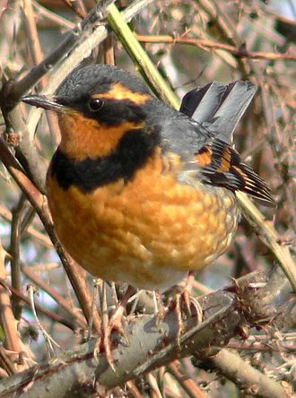
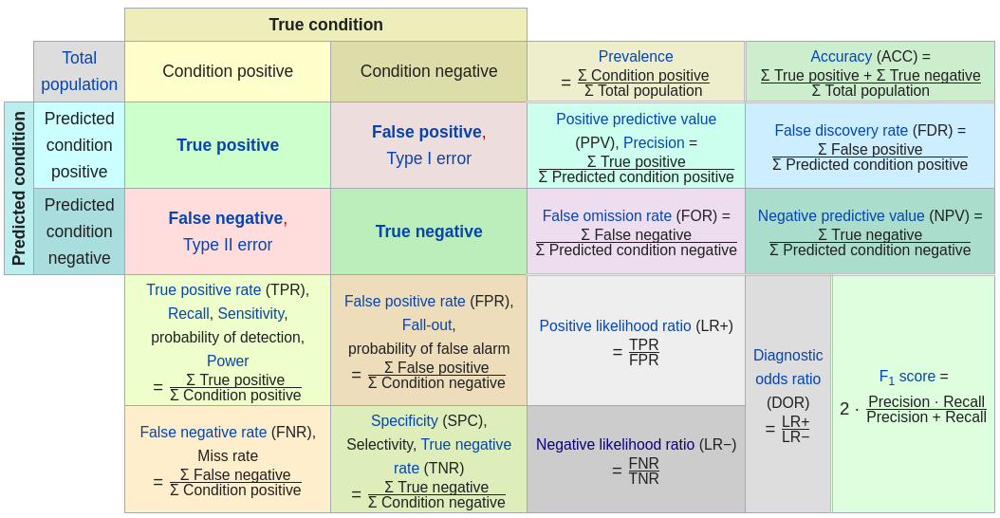

R : SDM : Varied Thrush¶
Preparation¶
R library that provides bindings to GDAL library.
$ conda install libgdal
$ R
> install.packages("rgdal",configure.args=c(rgdal = "--with-proj_api=proj.h"))
> install.packages("dismo")
> install.packages("caret")
> install.packages("InformationValue")
[3]:
library(raster)
library(dismo)
library(caret)
library(InformationValue)
[4]:
set.seed(30)
Species of Interest : Varied Thrush¶
The varied thrush breeds in western North America from Alaska to northern California.
It is migratory, with northern breeders moving south within or somewhat beyond the breeding range.
Other populations may only move altitudinally.

Read in data¶
[16]:
vath.data <- read.csv("./txt/vath_2004.csv")
vath.val <- read.csv("./txt/vath_VALIDATION.csv")
[3]:
head(vath.data)
| SURVEYID | TRANSECT | POINT | VATH | EASTING | NORTHING | |
|---|---|---|---|---|---|---|
| <int> | <int> | <int> | <int> | <dbl> | <dbl> | |
| 1 | 1 | 452511619 | 3 | 0 | 59332.20 | 173289.0 |
| 2 | 2 | 452511619 | 5 | 0 | 59142.22 | 173151.8 |
| 3 | 3 | 452511619 | 6 | 0 | 58834.36 | 173185.7 |
| 4 | 4 | 452511619 | 9 | 0 | 58754.24 | 172876.0 |
| 5 | 5 | 452511625 | 1 | 0 | 59037.42 | 181450.2 |
| 6 | 6 | 452511625 | 4 | 0 | 59336.71 | 181389.1 |
[17]:
# split dataset by presence
vath.pres <- vath.data[vath.data$VATH==1,]
vath.abs <- vath.data[vath.data$VATH==0,]
vath.pres.xy <- as.matrix(vath.pres[,c("EASTING","NORTHING")])
vath.abs.xy <- as.matrix(vath.abs[,c("EASTING","NORTHING")])
[18]:
# validation dataset
vath.val.pres <- as.matrix(vath.val[vath.val$VATH==1, c("EASTING","NORTHING")])
vath.val.abs <- as.matrix(vath.val[vath.val$VATH==0, c("EASTING","NORTHING")])
vath.val.xy <- as.matrix(vath.val[,c("EASTING","NORTHING")])
[16]:
head(vath.val.pres)
| EASTING | NORTHING | |
|---|---|---|
| 97 | 257608.84 | 260574.5 |
| 151 | 72212.39 | 355337.3 |
| 152 | 72305.07 | 355535.5 |
| 154 | 156539.72 | 354851.7 |
| 155 | 156770.04 | 354898.6 |
| 164 | 54244.40 | 366721.0 |
[5]:
# env layers
elev <- raster("./R_db/elev.gri") # elevation
canopy <- raster("./R_db/cc2.gri") # canopy slope
mesic <- raster("./R_db/mesic.gri") # mesic forest
precip <- raster("./R_db/precip.gri") # precipitation
[23]:
#check maps
compareRaster(elev, canopy)
[26]:
compareRaster(elev, mesic)
Error in compareRaster(elev, mesic): different extent
Traceback:
1. compareRaster(elev, mesic)
2. stop("different extent")
[6]:
elev
class : RasterLayer
dimensions : 2083, 1643, 3422369 (nrow, ncol, ncell)
resolution : 200, 200 (x, y)
extent : 19165, 347765, 164300, 580900 (xmin, xmax, ymin, ymax)
crs : NA
source : /home/user/SE_data/exercise/R_db/elev.grd
names : elev_km
values : 0, 3.079 (min, max)
[7]:
mesic
class : RasterLayer
dimensions : 2050, 1586, 3251300 (nrow, ncol, ncell)
resolution : 210, 210 (x, y)
extent : 16965, 350025, 153735, 584235 (xmin, xmax, ymin, ymax)
crs : +proj=aea +lat_1=46 +lat_2=48 +lat_0=44 +lon_0=-109.5 +x_0=600000 +y_0=0 +ellps=GRS80 +towgs84=0,0,0,0,0,0,0 +units=m +no_defs
source : /home/user/SE_data/exercise/R_db/mesic.grd
names : a_pmesic
values : 0, 1 (min, max)
[8]:
precip
class : RasterLayer
dimensions : 2152, 1664, 3580928 (nrow, ncol, ncell)
resolution : 200, 200 (x, y)
extent : 16965, 349765, 153735, 584135 (xmin, xmax, ymin, ymax)
crs : +proj=aea +lat_1=46 +lat_2=48 +lat_0=44 +lon_0=-109.5 +x_0=600000 +y_0=0 +ellps=GRS80 +towgs84=0,0,0,0,0,0,0 +units=m +no_defs
source : /home/user/SE_data/exercise/R_db/precip.grd
names : ppt_cm
values : 23, 287 (min, max)
Interpolation

[5]:
# resampling
mesic <- resample(x=mesic, y=elev, "ngb")
precip <- resample(x=precip, y=elev, "bilinear")
[6]:
#crop to same extent
mesic <- mask(mesic, elev)
precip <- mask(precip, elev)
[7]:
compareRaster(elev,precip, mesic)
[10]:
# creat a forest layer at 1km resolution
fw.1km <- focalWeight(mesic, 1000, 'circle')
mesic1km <- focal(mesic, w=fw.1km, fun="mean", na.rm=T)
[42]:
#create raster stacck
layers <- stack(canopy, elev, mesic, mesic1km, precip)
names(layers) <- c("canopy", "elev", "mesic", "mesic1km", "precip")
[50]:
options(repr.plot.width=18, repr.plot.height=11)
plot(layers,cex.axis=2,cex.lab=2,cex.main=2.5,legend.args=list(text=NULL, side=1, cex.lab = 3, line=2.3))
[13]:
options(repr.plot.width=18, repr.plot.height=16)
pairs(layers,maxpixels=1000,cex=0.5)
[14]:
#drop correlated layer (mesic)
layers <- dropLayer(layers, 3)
[19]:
#Generate background points using
# 2000 was chosen for the illustration purpose.
# This number can be much larger in real practice.
back.xy <- randomPoints(layers, p=vath.pres.xy, n=2000)
colnames(back.xy) <- c("EASTING","NORTHING")
[74]:
head(back.xy)
| x | y |
|---|---|
| 124065 | 226200 |
| 152665 | 317400 |
| 152465 | 250400 |
| 139265 | 258400 |
| 181465 | 378800 |
| 59665 | 423800 |
[20]:
options(repr.plot.width=9, repr.plot.height=9)
plot(elev)
points(back.xy)
[21]:
#extract GIS data
pres.idpv <- extract(layers, vath.pres.xy)
back.idpv <- extract(layers, back.xy)
val.idpv <- extract(layers, vath.val.xy)
[22]:
#link data
df.pres <- data.frame(vath.pres.xy, pres.idpv, pres=1)
df.back <- data.frame(back.xy, back.idpv, pres=0)
df.val <- data.frame(vath.val, val.idpv)
[87]:
head(df.pres)
| EASTING | NORTHING | canopy | elev | mesic1km | precip | pres | |
|---|---|---|---|---|---|---|---|
| <dbl> | <dbl> | <dbl> | <dbl> | <dbl> | <dbl> | <dbl> | |
| 22 | 95880.25 | 191274.0 | 0.03908799 | 2.033 | 0.1481481 | 126.000 | 1 |
| 38 | 90821.05 | 210968.8 | -0.13464460 | 1.682 | 0.3950617 | 104.000 | 1 |
| 39 | 90745.12 | 210715.3 | 0.32875299 | 1.665 | 0.4691358 | 104.000 | 1 |
| 42 | 90463.29 | 209767.5 | 0.22702400 | 1.676 | 0.7530864 | 106.000 | 1 |
| 43 | 90142.26 | 209555.8 | 0.43240750 | 1.659 | 0.8148148 | 106.000 | 1 |
| 48 | 116258.21 | 216962.9 | 0.59498268 | 1.497 | 1.0000000 | 85.875 | 1 |
[23]:
#remove any potential NAs
df.pres <- df.pres[complete.cases(df.pres),]
df.back <- df.back[complete.cases(df.back),]
df.val <- df.val[complete.cases(df.val),]
[24]:
# merge together
df.all <- rbind(df.pres, df.back)
[90]:
head(df.all)
| EASTING | NORTHING | canopy | elev | mesic1km | precip | pres | |
|---|---|---|---|---|---|---|---|
| <dbl> | <dbl> | <dbl> | <dbl> | <dbl> | <dbl> | <dbl> | |
| 22 | 95880.25 | 191274.0 | 0.03908799 | 2.033 | 0.1481481 | 126.000 | 1 |
| 38 | 90821.05 | 210968.8 | -0.13464460 | 1.682 | 0.3950617 | 104.000 | 1 |
| 39 | 90745.12 | 210715.3 | 0.32875299 | 1.665 | 0.4691358 | 104.000 | 1 |
| 42 | 90463.29 | 209767.5 | 0.22702400 | 1.676 | 0.7530864 | 106.000 | 1 |
| 43 | 90142.26 | 209555.8 | 0.43240750 | 1.659 | 0.8148148 | 106.000 | 1 |
| 48 | 116258.21 | 216962.9 | 0.59498268 | 1.497 | 1.0000000 | 85.875 | 1 |
[25]:
# data transformation
# Scaling and centering the environmental variables to zero mean and variance of 1
predictors <- c("canopy","elev","mesic1km","precip")
df.all[,predictors] <- scale(df.all[,predictors])
[94]:
head(df.all)
| EASTING | NORTHING | canopy | elev | mesic1km | precip | pres | |
|---|---|---|---|---|---|---|---|
| <dbl> | <dbl> | <dbl> | <dbl> | <dbl> | <dbl> | <dbl> | |
| 22 | 95880.25 | 191274.0 | -0.1392220 | 1.5492040 | -0.609419480 | 0.8536111 | 1 |
| 38 | 90821.05 | 210968.8 | -0.6450800 | 0.7652292 | 0.009843172 | 0.2539466 | 1 |
| 39 | 90745.12 | 210715.3 | 0.7041968 | 0.7272587 | 0.195621968 | 0.2539466 | 1 |
| 42 | 90463.29 | 209767.5 | 0.4079921 | 0.7518278 | 0.907774019 | 0.3084616 | 1 |
| 43 | 90142.26 | 209555.8 | 1.0060081 | 0.7138576 | 1.062589682 | 0.3084616 | 1 |
| 48 | 116258.21 | 216962.9 | 1.4793790 | 0.3520229 | 1.527036672 | -0.2400951 | 1 |
Model Fitting¶
generalized linear model
An exponential family of probability distributions.
A linear predictor \(\displaystyle \eta =X\beta\)
A link function \({\displaystyle g}\) such that \({\displaystyle E(Y\mid X)=\mu =g^{-1}(\eta )}\)
[26]:
mdl.vath <- glm(pres~canopy+elev+I(elev^2)+mesic1km+precip, family=binomial(link=logit), data=df.all)
[27]:
summary(mdl.vath)
Call:
glm(formula = pres ~ canopy + elev + I(elev^2) + mesic1km + precip,
family = binomial(link = logit), data = df.all)
Deviance Residuals:
Min 1Q Median 3Q Max
-0.7757 -0.3423 -0.2126 -0.1371 3.5321
Coefficients:
Estimate Std. Error z value Pr(>|z|)
(Intercept) -2.85830 0.17404 -16.424 < 2e-16 ***
canopy 0.19543 0.09928 1.968 0.04901 *
elev -0.72618 0.27404 -2.650 0.00805 **
I(elev^2) -0.97856 0.24709 -3.960 7.49e-05 ***
mesic1km 0.39188 0.15197 2.579 0.00992 **
precip 0.49281 0.16762 2.940 0.00328 **
---
Signif. codes: 0 ‘***’ 0.001 ‘**’ 0.01 ‘*’ 0.05 ‘.’ 0.1 ‘ ’ 1
(Dispersion parameter for binomial family taken to be 1)
Null deviance: 773.28 on 2093 degrees of freedom
Residual deviance: 674.77 on 2088 degrees of freedom
AIC: 686.77
Number of Fisher Scoring iterations: 8
Model Evaluation¶
[28]:
df.val[,predictors] <- scale(df.val[,predictors])
[29]:
df.val$pred <- predict(mdl.vath,df.val[,predictors],type="response")
[30]:
head(df.val)
| X.1 | X | TRANSECT | STOP | YEAR | VATH | EASTING | NORTHING | canopy | elev | mesic1km | precip | pred | |
|---|---|---|---|---|---|---|---|---|---|---|---|---|---|
| <int> | <int> | <int> | <int> | <int> | <int> | <dbl> | <dbl> | <dbl> | <dbl> | <dbl> | <dbl> | <dbl> | |
| 1 | 1 | 1 | 464811437 | 2 | 2007 | 0 | 209685.9 | 325750.0 | 0.74425510 | -0.5121329 | -0.1800319 | -1.1350612 | 0.0381429149 |
| 2 | 2 | 2 | 464811437 | 3 | 2007 | 0 | 209845.0 | 325979.0 | 0.44215351 | -0.5299351 | -0.2678732 | -1.1350612 | 0.0346827307 |
| 3 | 3 | 3 | 464811437 | 6 | 2007 | 0 | 210406.8 | 326674.1 | 0.50654501 | -0.4705947 | -0.7070799 | -1.1045330 | 0.0305994483 |
| 4 | 4 | 4 | 454311415 | 3 | 2007 | 0 | 230797.4 | 201486.2 | -0.92568323 | 1.5855534 | -1.0877256 | -0.4319874 | 0.0006819783 |
| 5 | 5 | 5 | 454311415 | 4 | 2007 | 0 | 231006.4 | 201499.1 | -0.60895621 | 1.5291802 | -1.0877256 | -0.4319874 | 0.0008973454 |
| 6 | 6 | 6 | 454311415 | 6 | 2007 | 0 | 231491.6 | 201433.0 | 0.01492895 | 1.7784102 | -1.0877256 | -0.3209758 | 0.0003989799 |
confusion matrix

[31]:
cutoff <- optimalCutoff(df.val$VATH, df.val$pred)
[32]:
df.val[which(df.val$pred>=cutoff),]
| X.1 | X | TRANSECT | STOP | YEAR | VATH | EASTING | NORTHING | canopy | elev | mesic1km | precip | pred | |
|---|---|---|---|---|---|---|---|---|---|---|---|---|---|
| <int> | <int> | <int> | <int> | <int> | <int> | <dbl> | <dbl> | <dbl> | <dbl> | <dbl> | <dbl> | <dbl> | |
| 1555 | 1557 | 1557 | 471011616 | 12 | 2008 | 1 | 87299.98 | 374993.7 | 1.695836 | -0.26587 | 1.28399 | 1.751242 | 0.2617735 |
[33]:
confusionMatrix(df.val$VATH,df.val$pred,threshold=cutoff)
| 0 | 1 | |
|---|---|---|
| <int> | <int> | |
| 0 | 1763 | 148 |
| 1 | 0 | 1 |
[129]:
specificity(df.val$VATH,df.val$pred,threshold=cutoff)
[130]:
sensitivity(df.val$VATH,df.val$pred,threshold=cutoff)
[140]:
# Calculate the percentage misclassification error for the given actuals and probaility scores.
misClassError(df.val$VATH,df.val$pred,threshold=cutoff)
ROC curves

[141]:
plotROC(df.val$VATH,df.val$pred)
Discussions¶
HW vs. Project
Future course topics
thematic subjects : eg. GLM, Bayesian, etc.
data techniques : eg. transformations, sampling, etc.
case studies
others ?
Feedback : Please Provide input via slack channel by 4pm Apr 8. (EDT)
References¶
- Geocomputation with R. https://geocompr.robinlovelace.net/
- Spatial Data Science with R. https://www.rspatial.org/
- M. Stevens. A Primer Of Ecology With R (2009)
- D. Borcard, F. Gillet, and P. Legendre. Numerical Ecology with R (2018)
- R. Fletcher and M. Fortin. Spatial Ecology and Conservation Modeling Applications with R (2018)
- Spatial Modeling in GIS and R for Earth and Environmental Sciences (2019) ISBN : 978-0128152263
- https://en.wikipedia.org/wiki/Varied_thrush
- https://en.wikipedia.org/wiki/Mesic_habitat
- https://en.wikipedia.org/wiki/Generalized_linear_model
- https://en.wikipedia.org/wiki/Binomial_distribution
- https://en.wikipedia.org/wiki/Receiver_operating_characteristic
- https://en.wikipedia.org/wiki/Bilinear_interpolation
- https://en.wikipedia.org/wiki/Nearest-neighbor_interpolation